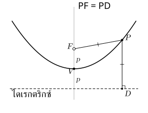
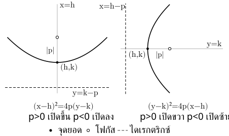
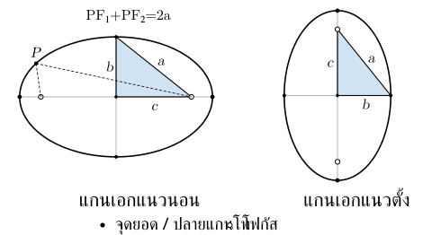
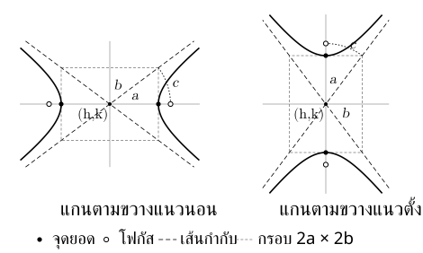
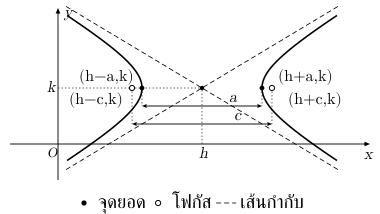

. มองสมการให้เห็นรูปกราฟ
ภาคตัดกรวยสี่รูป: วงกลม พาราโบลา วงรี ไฮเพอร์โบลา เงื่อนไขระยะต่างกัน จึงได้สมการและกราฟต่างกัน
เมื่อจัดสมการเป็นรูปมาตรฐาน เราจะอ่านตำแหน่ง ขนาด และทิศทางของกราฟได้ง่ายขึ้น โดย เป็นศูนย์กลางของวงกลม วงรี และไฮเพอร์โบลา แต่เป็นจุดยอดของพาราโบลา
โฟกัส คือจุดอ้างอิงในเงื่อนไขระยะ; จุดยอด คือจุดสำคัญที่บอกตำแหน่ง/ทิศกราฟ
. วงกลม
วงกลมคือเซตของจุดที่อยู่ห่างจากศูนย์กลางเท่ากันทุกจุด ระยะคงที่นี้คือรัศมี
ศูนย์กลาง และรัศมี ให้สมการ
ถ้าหารด้วย จะเขียนได้เป็น
เทียบกับวงรี: วงกลมมีระยะศูนย์กลางถึงขอบแนวนอน/ตั้งเท่ากัน ตัวส่วนจึงเท่ากัน
ระวัง: ด้านขวาของสมการรูปแรกคือ ไม่ใช่ และเครื่องหมายในวงเล็บตรงข้ามกับพิกัดศูนย์กลาง เช่น ให้พิกัด ของศูนย์กลางเป็น
. พาราโบลา
พาราโบลาคือเซตของจุดที่อยู่ห่างจากจุดคงที่หนึ่งจุด เรียกว่า โฟกัส เท่ากับระยะจากเส้นตรงคงที่ เรียกว่า ไดเรกตริกซ์
เส้นที่ผ่านจุดยอดและโฟกัสเป็นแกนสมมาตรของพาราโบลา

ให้จุดยอดเป็น และ โดย เป็นระยะจากจุดยอดถึงโฟกัส เครื่องหมายของ บอกทิศที่กราฟเปิด
แกนสมมาตรแนวตั้ง
- จุดยอด:
- โฟกัส:
- ไดเรกตริกซ์:
- แกนสมมาตร:
- เปิดขึ้น; เปิดลง
แกนสมมาตรแนวนอน
- จุดยอด:
- โฟกัส:
- ไดเรกตริกซ์:
- แกนสมมาตร:
- เปิดขวา; เปิดซ้าย

ระวัง: ตัวแปรที่ยกกำลังสองไม่ได้บอกทิศเปิดโดยตรง เช่น ยกกำลังสองในรูปมาตรฐานข้างต้น แต่กราฟเปิดขึ้นหรือลงตามแนว และสัมประสิทธิ์ด้านขวาคือ ไม่ใช่
. วงรี
วงรีคือเซตของจุดที่ผลบวกของระยะถึงโฟกัสสองจุดเป็นค่าคงที่ กราฟเป็นรูปปิดที่ยาวในแนวหนึ่งมากกว่าอีกแนวหนึ่ง
ให้ศูนย์กลางเป็น และ โดย คือครึ่งความยาวแกนเอก และ คือครึ่งความยาวแกนโท
| จุดสำคัญ/สมการ | แกนเอกแนวนอน | แกนเอกแนวตั้ง |
|---|---|---|
| สมการ | ||
| จุดยอดบนแกนเอก | ||
| ปลายแกนโท | ||
| โฟกัส |
ทั้งสองรูปใช้ โดย เป็นระยะจากศูนย์กลางถึงโฟกัส แกนเอกยาว แกนโทยาว และผลบวกของระยะจากจุดบนวงรีถึงโฟกัสทั้งสองเท่ากับ

วิธีอ่านทิศ: ดูตัวส่วนที่ใหญ่กว่า ถ้าอยู่ใต้พจน์ แกนเอกเป็นแนวนอน ถ้าอยู่ใต้พจน์ แกนเอกเป็นแนวตั้ง
ระวัง: ตัวส่วนในสมการคือ และ ต้องถอดรากก่อนใช้เป็นระยะ และโฟกัสของวงรีอยู่ระหว่างศูนย์กลางกับจุดยอด เพราะ
. ไฮเพอร์โบลา
ไฮเพอร์โบลาคือเซตของจุดที่ค่าสัมบูรณ์ของผลต่างของระยะถึงโฟกัสสองจุดเป็นค่าคงที่ กราฟแยกเป็นสองแขน
ให้ศูนย์กลางเป็น และ โดย เป็นระยะจากศูนย์กลางถึงจุดยอด แกนที่ผ่านจุดยอดทั้งสองเรียกว่า แกนตามขวาง
แกนตามขวางแนวนอน
- กราฟเปิดซ้ายและขวา
- จุดยอด:
- โฟกัส:
- เส้นกำกับ:
แกนตามขวางแนวตั้ง
- กราฟเปิดขึ้นและลง
- จุดยอด:
- โฟกัส:
- เส้นกำกับ:
ทั้งสองรูปใช้ และค่าสัมบูรณ์ของผลต่างของระยะจากจุดบนกราฟถึงโฟกัสทั้งสองเท่ากับ
เส้นกำกับ คือเส้นตรงที่แขนของกราฟเข้าใกล้เมื่อห่างออกไป เส้นกำกับทั้งสองผ่านศูนย์กลาง และช่วยร่างทิศทางของกราฟได้

วิธีอ่านทิศ: เมื่อด้านขวาเป็น ให้ดูพจน์ที่เป็นบวก ถ้าพจน์ เป็นบวก กราฟเปิดซ้าย–ขวา ถ้าพจน์ เป็นบวก กราฟเปิดขึ้น–ลง
ระวัง: ไฮเพอร์โบลาไม่จำเป็นต้องมี ตัวส่วนของพจน์บวกคือ แม้จะเล็กกว่าตัวส่วนอีกพจน์ และใช้ ต่างจากวงรีที่เป็นการลบ
. เปรียบเทียบรูปมาตรฐาน
| รูป | สิ่งที่สังเกตหลังจัดรูป | สิ่งที่ช่วยอ่านกราฟ |
|---|---|---|
| วงกลม | สองพจน์กำลังสองบวกกัน ตัวส่วนเท่ากัน และด้านขวาเป็น | ศูนย์กลางและรัศมี |
| พาราโบลา | มีตัวแปรกำลังสองเพียงตัวเดียว อีกตัวเป็นกำลังหนึ่ง | จุดยอดและเครื่องหมายของ |
| วงรี | สองพจน์กำลังสองบวกกัน ตัวส่วนบวกไม่เท่ากัน และด้านขวาเป็น | ตัวส่วนที่ใหญ่กว่าบอกแนวแกนเอก |
| ไฮเพอร์โบลา | สองพจน์กำลังสองลบกัน ตัวส่วนเป็นบวก และด้านขวาเป็น | พจน์ที่เป็นบวกบอกแนวแกนตามขวาง |
ตารางนี้ใช้กับรูปมาตรฐานที่แกนขนานกับแกนพิกัด ถ้าโจทย์ยังไม่อยู่ในรูปนี้ ให้จัดสมการก่อนแล้วจึงอ่านกราฟ
. จัดกำลังสองสมบูรณ์เพื่อหารูปมาตรฐาน
มีพจน์ ปนกำลังสอง → จัดเป็นวงเล็บกำลังสองเพื่ออ่านตำแหน่งกราฟ
เมื่อสัมประสิทธิ์หน้าพจน์กำลังสองเป็น ให้ดูจำนวนที่คูณกับ แล้วทำตามนี้
. หารสอง: นำสัมประสิทธิ์หน้า หารด้วย ค่าที่ได้จะอยู่คู่กับ ในวงเล็บ
. ยกกำลังสอง: นำค่าที่ได้มายกกำลังสอง เพื่อหาจำนวนที่ต้องเติม
. บวกเข้าและลบออก: บวกจำนวนนี้เพื่อให้ครบกำลังสองสมบูรณ์ แล้วลบจำนวนเดียวกันไว้ด้วย เพื่อให้นิพจน์ยังมีค่าเท่าเดิม
เช่น ต้องการจัด
- สัมประสิทธิ์หน้า คือ หารสองได้
- นำ ยกกำลังสองได้ จึงเติม และ
สามพจน์แรกเป็น ; ชดเชยที่เติม จึงคงค่าของนิพจน์เดิม
ถ้ามีสัมประสิทธิ์หน้าพจน์กำลังสอง ให้ดึงออกก่อน เช่น
ในวงเล็บ สัมประสิทธิ์หน้า คือ หารสองได้ และยกกำลังสองได้ จึงจัดเป็น
ระวัง: เวลาหารสองต้องเก็บเครื่องหมายของสัมประสิทธิ์ด้วย และจำนวนที่บวกเข้า–ลบออกต้องอยู่ภายในวงเล็บเดียวกัน ถ้าจะนำออกนอกวงเล็บ ต้องคูณสัมประสิทธิ์ด้านนอกให้ครบ
จัดครบ → ย้ายค่าคงที่ → วงรี/ไฮเพอร์โบลาหารให้ด้านขวาเป็น → อ่านศูนย์กลาง/พารามิเตอร์
ถ้าต้องหารด้วยจำนวนลบ เครื่องหมายของทุกพจน์จะเปลี่ยน จึงต้องอ่านทิศจากสมการหลังจัดรูปเสร็จ ไม่อ่านจากเครื่องหมายในสมการตั้งต้น
. แนวข้อสอบที่เน้น: อ่านไฮเพอร์โบลาหลังจัดรูป
สมการยังอ่านศูนย์กลาง/ทิศไม่ได้ → จัดกำลังสองสมบูรณ์และให้ด้านขวาเป็น ก่อน
จากนั้นอ่านตามลำดับ
. ศูนย์กลาง: อ่าน จากวงเล็บ
. ทิศเปิด: ดูว่าพจน์ หรือพจน์ เป็นบวก
. ระยะถึงจุดยอด: ถอดรากตัวส่วนของพจน์บวกเพื่อหา
. ระยะถึงโฟกัส: ใช้
. เส้นกำกับ: เลือกสูตรตามแนวแกนตามขวาง แล้วใส่ตำแหน่งศูนย์กลาง
ถ้าโจทย์ถามจุดยอดหรือโฟกัส ให้เริ่มจากศูนย์กลางแล้วขยับไปตามแกนตามขวาง เช่น แกนแนวนอนเปลี่ยนพิกัด ส่วนพิกัด คงเดิม

ระวัง: เป็นระยะ ไม่ใช่พิกัดของจุดยอดทันที ต้องนำไปบวกหรือลบจากพิกัดศูนย์กลาง และไม่เลือก จากตัวส่วนที่ใหญ่กว่าเหมือนวงรี